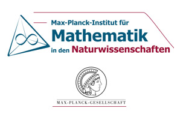
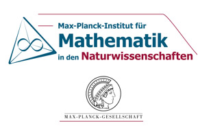

- Prof. G.O.S. Ekhaguere, University of Ibadan
 .
.
- Prof. Ezekiel Ayoola, University of Ibadan
.
- Prof. O.O. Ugbebor, University of Ibadan
.
- Prof. V.F. Payne, University of Ibadan
.
- Dr. U.N. Bassey, HOD Mathematics, University of Ibadan
.
- Dr. Deborah Ajayi, University of Ibadan
.
- Dr. M. EniOluwafe, University of Ibadan
- Dr. H. Praise Adeyemo, University of Ibadan
.
- Dr. Babatunde Onasanya, University of Ibadan
- Dauda Dikko, University of Ibadan
- Ini Adinya, University of Ibadan
- A. Akeju, University of Ibadan
- Ignatius Ngwongwo (Ph.D Student), University of Ibadan
- Felemu Olasupo (Ph.D Student), University of Ibadan
- Kayode Oke (M.Sc), University of Ibadan
Ex Officio
- Prof. A. Kuku (President, African Academy of Sciences).
- Prof. S.A. Ilori (AMMSI Regional Coordinator Zone 1 (Anglophone)).
- Prof. A.T. Solarin (President, African Mathematical Union).
- Prof. M.O. Ibrahim (President, Mathematical Association of Nigeria).
- Prof. N.I. Akinwande (President, Nigerian Mathematical Society).
Scientific Overview:
This research school will introduce the participants to some basics of
algebraic geometry with an emphasis on computational aspects, such as Groebner bases and
combinatorial aspects, such as toric varieties and tropical geometry. We will also learn
how to use the freely available software Macaulay2 for studying algebraic varieties.
The lecturers for this school are all active in these areas and collectively have
deep experience both as researchers and educators through the supervision of students;
Ph.D. and postdoctoral, as well as the organization of and lecturing in short courses.
Scientific Program:
This CIMPA Research School will last two weeks, and will have seven short courses of
four or five lectures each, as described below.
These will range from foundational to provide background through more
advanced topics. We plan to have lectures in the morning and just after lunch
(approximately four hours each day) with afternoon exercise sessions, including computer labs to
gain experience using open-source software such as Macaulay2.
Each day of the research school will
conclude with a more advanced research talk given by participants and by some
distinguished Nigerian Mathematicians.
This model of lectures, exercise sessions, and research talks has been used successfully at
past summer schools.
This school is aimed at faculty and advanced graduate students from Nigeria and
neighboring countries. We are planning to have approximately 40 participants with 25 from
Nigeria and 15 from other countries from Africa, particularly from Nigeria's neighbours, both
anglophone and francophone.
If more funding is found, we will invite more students.
Lectures:
Dr. H. Praise Adeyemo, University Ibadan, Ibadan, Oyo, Nigeria.
Ideals and Varieties.
Quoting Sophie Germain, "Algebra is written geometry and geometry
is drawing algebra". Algebraic geometry is the study of common
zeroes associated to a set of polynomials. I will give a short
course on algebraic sets and ideals. This will focus on Hilbert's
theorems and their consequences which establish a dictionary
between algebraic sets and ideals. This dictionary is the source
of the strength of algebraic geometry, for it allows us to study
algebraic sets through their defining polynomials and vice versa
Dr. Erwan Brugallé, École polytechnique, Paris, France.
Enumerative geometry of plane curves.
Enumerative geometry is the area of mathematics which studies questions
like: how many lines pass through two points (easy)? How many conics
pass through five conics pass through five points (easy)? How many
cubics with a crossing point pass through 8 points (less easy)?...
The aim of this course is to give a basic introduction to this topic
from different points of view: enumeration of algebraic curves, and
enumeration of tropical curves. In particular, tropical geometry
provides an efficient tool to solve enumerative problem via
combinatorial methods.
Dr. Damian Maingi, University Nairobi, Kenya.
Gröbner Bases.
Algebraic structures, polynomials, and ideals of polynomial rings.
Gr&oum;obner basis basics, orderings on monomials, division algorithm, monomials ideals,
Hilbert Basis Theorem and Gröobner Basis Buchberger's algorithm,
ideal membership problem, implication problem and elimination theory.
Prof. Victoria Powers Emory University, Atlanta, Georgia, USA.
Positive polynomials and sums of squares
If a real polynomial f can be written as a sum of squares of
real polynomials, then clearly f must take only nonnegative values in real
n-space. This simple fact and generalizations of it underlie a large body
of theoretical and computational results concerning positive polynomials
and sums of squares. We will introduce the subject, discuss its history,
which goes back to Hilbert's work in the late 19th century, and look at
recent advances, computational aspects, and applications.
Dr. Kristin Shaw, Max Planck Institut, Leipzig.
Tropical, discrete, and algebraic geometry
This course will be an introduction to tropical geometry. The primary goal
will be to highlight its applications to both discrete and algebraic
geometries.
Tropical geometry can be viewed as algebraic geometry over the max-plus
semi-field.
Its objects are polyhedral in nature and are of interest to classical
algebraic geometers because tropical varieties appear via a degeneration
procedures of classical varieties. Yet, in the world of tropical geometry
there are many objects not arising in this way. Sometimes they arise
purely from combinatorics.
In this way, tropical geometry provides a powerful bridge between the
worlds of combinatorics and algebraic geometry and the benefits of this
connection go both ways. Combinatorial methods can be used to solve
problems in classical algebraic geometry. A major example of this is the
tropical enumerative geometry of complex and real curves via Mikhalkin's
correspondence theorem.
On the other hand, tools standard in algebraic geometry can be used to
approach structures in discrete mathematics. This has been quite useful in
the study of matroids, which, thanks to tropical geometry, can be treated
with the tools and theorems of classical algebraic geometry.
In particular, the development of the tropical intersection theory has led
to the resolution of conjectures in matroid theory in the very recent work
of Adiprasito, Huh and Katz.
Prof. Frank Sottile, Texas A&M University, College Station, Texas, USA.
Toric Varieties.
Among the simplest ideals are toric ideals–prime ideals generated by binomials.
These are the ideals of toric varieties, and they enjoy a strong relation to geometric
combinatorics of point conficurations, integer polytopes, and fans.
This course will introduce toric ideals, leading to the basic theory of toric varieties.
Prof. Bernd Sturmfels University of California, Berkeley, California, USA.
Tensors
Eigenvectors of square matrices are central to linear algebra.
Eigenvectors of tensors are a natural generalization. The spectral theory of
tensors was pioneered by Lim and Qi a decade ago, and it has found numerous
applications. We discuss the use of orthogonal tensor decompositions in data
analysis, and we present work with Abo and Seigal aimed at characterizing
which configurations of vectors arise as the eigenvectors of some tensor.
This short course also serves an invitation to applied algebraic geometry.


 


Last modified: Thu Jul 13 14:32:12 EDT 2017